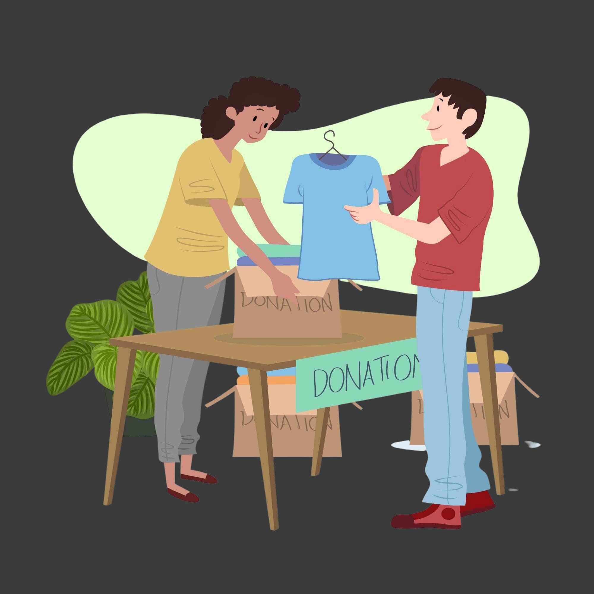

¡Llega el evento perfecto para renovar tu armario y tu hogar sin gastar dinero! 🌍✨
Te invitamos a nuestro evento de intercambio de ropa y objetos usados, donde podrás
traer esas prendas y artículos que ya no utilizas y cambiarlos por algo que realmente necesites.
¿Cómo participar?
✅ Trae ropa, accesorios, libros, juguetes o cualquier objeto en buen estado.
Ven a disfrutar de un día lleno de sostenibilidad, comunidad y consumo responsable.
🎟️ Entrada gratuita – ¡No te lo pierdas!
¡Únete al cambio y ayúdanos a dar una segunda vida a lo que ya no usamos!
📅 Fecha: 15 de marzo de 2025
🕛 Horario: 12:00 - 22:00
📍 Lugar: Auditorio de Puertollano